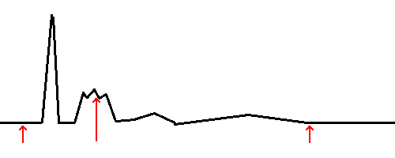
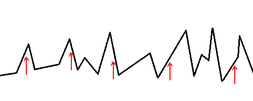
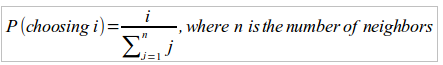

Beam Search
With hill climbing, we get the advantage of using relatively little memory in most cases since in any iteration, the algorithm only needs to keep track of its current state and that state's immediate neighbors (for determining the next step).
Beam search allows us to start with a collection of k randomly generated states. We keep track of all k "beams" at each step. At every iteration, the algorithm generates a set of neighbors of all k states. Then, it selects the top k successors from the complete list of neighbors and repeats. In pseudocode:
$ // Return a state that is a local maximum
$ function beam_search(problem):
$ k-current-states <-Initialize the problem with k starting states
$ max_value <- -infinity
$ loop do
$ loop through each beam in k-current-states
$ Add all successors for each beam to neighbors
$ If the maximum fitness value of the states in neighbors <= max_value:
$ Terminate and return member of k-current-states with highest fitness
$ k-current-states <- top k values in neighbors
Beam search can be easily confused with random-restart hill climbing. For example, how is beam search with 100 beams different from running hill-climbing with 100 random restarts? The difference is that for random-restart hill climbing, each run of the algorithm is completely independent of the other. For beam search, since the next generation is chosen from the pool of successors to all of the beams, the lowest ranked beams will quickly drop out of the pool. In some cases, this might actually be a bad thing. For a simple example, let's say that your search space looks like the diagram below and that you are using 3 beams, and they happened to fall out in the parts of the search space pointed to by the red arrows:
In this search space, there is a clear global maximum on the left hand side of the diagram. However, in the next generation, it is likely that all three of the candidates might be selected from "children" of the middle beam. If that's the case, then all three solution in that generation will be near the local maximum close to the middle beam, it's unlikely that we'll ever get to the global maximum, which is actually closer to the left beam. Of course, this problem could be solved by adding more beams, thereby increasing the chance of having one that falls out near the global max. In reality though, a search space might have millions of local maxima and increasing the number of threads accordingly might not be a feasible approach due to memory and computational constraints. So we can see that beam search might not work well in all search landscapes. Below is an example of a search landscape where beam search would probably yield good results:
In this example, there are many local peaks that come close to the global maximum. So even if you don't have any beams that start out near the global maximum (which is at second peak from the right by a close margin), it's likely that you will find a solution whose value is very close to the global maximum. In many optimization problems, being reasonably close to the global optimum is all that counts.
In finch, the beam search algorithm has the following signature:
func beam_search(num_beams int, evaluate func([]int) float64,
create_random func() []int, get_neighbors func([]int) [][]int)
The function takes in the following parameters:
- num_beams - The number of beams to use
- evaluate - A function that you must construct and pass in which takes a solution of type int[] as a parameter and returns a fitness score for the given solution of type float64
- create_random - A function that you must construct and pass in which takes no parameters and returns a 1-dimensional array of type int[] containing a random starting solution for your problem
- get_neighbors - A function that you must construct and pass in which takes a solution of type int[] as a parameter and returns a 2-dimensional array of type int[][] with all neighboring solutions
The function returns two values:
- The state at the local maximum (type []int)
- The fitness score at the local maximum (type float64)
Stochastic beam search
In certain situations, such as was described in relation to the first diagram above, the pool of beams can suffer from a lack of diversity such that all of the beams end up concentrating on one portion of the search space. When this happens, beam search is doing little more that an expensive version of hill climbing. Stochastic beam search helps to alleviate this issue. In this algorithm, which is somewhat similar to stochastic hill climbing, the next generation of beams are chosen randomly, with higher value beams having a higher chance of being chosen.
The finch version of stochastic beam search doesn't take into account actual fitness scores when choosing successors. It only takes into account relative positions. In other words, we rank the pool neighbors from worst to best and then we choose the next pool randomly, with each neighbor having a chance of being chosen that corresponds to its position in this ordered pool, not to its actual fitness value. If you have x beams, then the probability of the beam at position i being chosen for each slot in the next generation is simply:
The algorithm also uses an elitism strategy whereby the top member of each generation always gets passed to the next with 100% probability. Finally, unlike standard beam search, the finch implementation of stochastic beam search has a stopping condition that it must show no improvement for a user determined number of iterations before it terminates. Occassionally, the algorithm will go a few iterations without improving, before selecting a better neighbor and then continuing to climb higher. By adding this feature, it helps the algorithm escape local maxima. The functions signature is as follows:
func stochastic_beam_search(num_beams int, max_iterations_no_improvement int,
evaluate func([]int) float64, create_random func() []int,
get_neighbors func([]int)
The function takes in the following parameters:
- num_beams - The number of beams to use
- max_iterations_no_improvement - The number of iterations with no improvements before the algorithm terminates
- evaluate - A function that you must construct and pass in which takes a solution of type int[] as a parameter and returns a fitness score for the given solution of type float64
- create_random - A function that you must construct and pass in which takes no parameters and returns a 1-dimensional array of type int[] containing a random starting solution for your problem
- get_neighbors - A function that you must construct and pass in which takes a solution of type int[] as a parameter and returns a 2-dimensional array of type int[][] with all neighboring solutions
The function returns two values:
- The state at the local maximum (type []int)
- The fitness score at the local maximum (type float64)